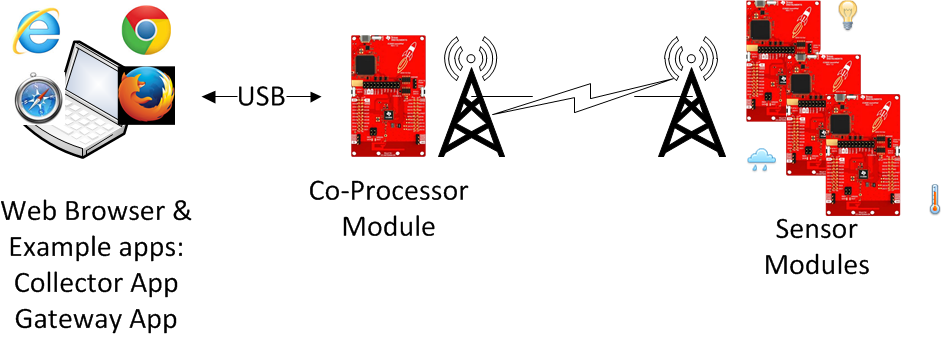
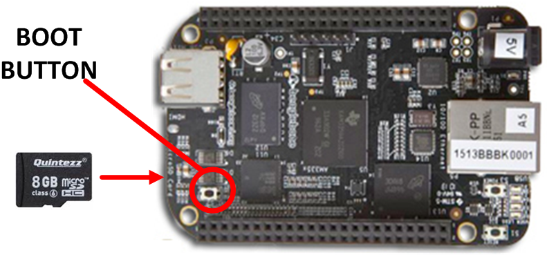
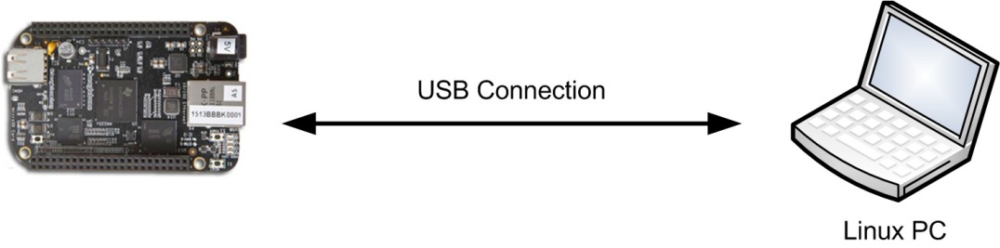
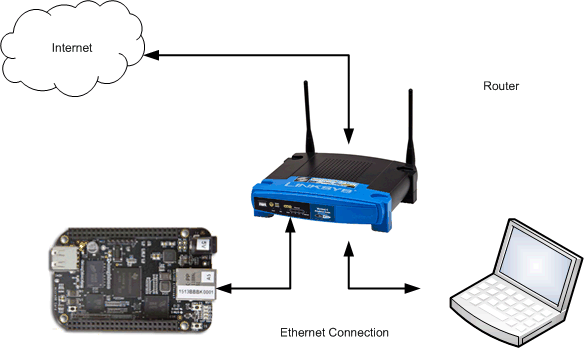
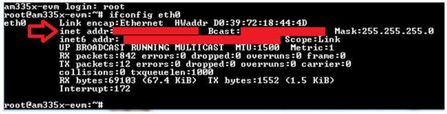

Development Environment¶
Hardware Requirements and Configurations¶
BeagleBone Black With CoProcessor and Multiple Sensors¶
The TI 15.4-Stack SDK Linux Example Applications can be executed from BBB as explained in this document. The following hardware is required:
- BeagleBone Black
- 8GB (or more) micro-SD memory card (required to program the processor SDK Image)
- One Ethernet cable
- One Linux machine running Ubuntu 14.04 LTS 64-bit
- At least two CC13xx/CC26x2 LaunchPad™ development kits
- LaunchPad 1 acts as the CoProcessor, which is the interface to the 802.15.4 network
- LaunchPad 2+ are the network nodes that join the TI 15.4-Stack-based network
- FTDI cable
- One USB cable to connect the LaunchPad to the BBB
- One 5-V power supply or mini USB cable to power the BBB
Figure 4. Network Configuration With Application Running on the BBB
Linux® x86 PC With CoProcessor and Multiple Sensors¶
The TI 15.4-Stack Linux SDK Example Application can be executed from an x86 machine running Ubuntu® connected through USB to a CC13xx/CC26x2 LaunchPad running the TI 15.4-Stack CoProcessor Application. The following hardware is required:
A Linux x86 PC running Ubuntu OS 14.04 LTS (x86_64 Bit)
USB cable to connect to the LaunchPad
At least two CC13xx/CC26x2 LaunchPad™ development kits
- LaunchPad 1 acts as the CoProcessor, which is the interface to the 802.15.4 network
- LaunchPad 2+ are the network nodes that join the TI 15.4-Stack-based network
Figure 5. Network Configuration With Application Running on the x86_64 PC Running Ubuntu® OS
Required Software¶
This section explains how to set up the hardware with the desired software to build and run the TI 15.4-Stack Linux SDK out-of-box example applications and setup to develop custom applications.
Linux® Development Host¶
The x86 machine running Ubuntu can be used to develop and run the applications as well as cross compile the applications for the BBB platform. This section provides setup instructions to build, develop, and run the applications on an x86 machine. This section also provides setup instructions for the x86 machine for cross-compiling on the BBB platform.
Note
When developing for the BBB platform on an x86 machine, the C code is cross-compiled and linked as a BBB application on your host x86 Linux_64 machine. The Arm executable is then copied to the BBB to run the application.
When cross-compiling, executables are named host_<name>, which means the compilation host. The prefix bbb_<name> is used as a target prefix for the BBB.
Install the following software on your x86_64 machine running Ubuntu 14.04 LTS 64-bit to run the TI 15.4-Stack Linux SDK out-of-box example applications.
Install the TI 15.4-Stack Linux SDK
Download the TI 15.4-Stack Linux SDK on to your Linux machine.
Note
Because the installer is a 64-bit Linux executable, it requires a 64-bit Linux machine.
On the host (Linux x86_64) machine, go to the directory where the Linux Installer is located and use the following commands to install:
$chmod +x ti15.4stack_linux_x64_xx_xx_xx_xx.run $./ti15.4stack_linux_x64_xx_xx_xx_xx.runNote
The $ symbol prompt indicates that this installer should be run as a normal user. Do not run as a ROOT (with the # prompt).
The default TI 15.4-Stack install directory is:
${HOME}/ti/simplelink/ti154stack_linux_64_xx_xx_xx_xx
Do an update
$sudo apt-get updateInstall the package: build essentials
$sudo apt-get install build-essentialInstall the package: Node.js
$sudo apt-get install Node.jsYour user name must be a member of the group dialout
$sudo adduser $USER dialout
To cross-compile for BBB, install TI’s AM335x Sitara Processor SDK for Linux . TI’s processor SDK for AM335x contains all of the cross- compilation tools, headers, libraries, and other required files for cross- compiling to the BBB.
Note
- In the TI 15.4-Stack Linux SDK, the processor SDK is installed in the following location: /home/${USER}/ti-processor-sdk-linux- am335x-evm-xx.xx.xx.xx
- The TI processor SDK download is very large and expands to an even larger installation (the download is approximately 3GB, the installed footprint is approximately 4.5GB) and is only required to build the Example Applications through a cross-compilation scheme.
If the TI processor SDK is installed in a different location or is a different version, then the following two files must be updated:
- File 1: ${SDK_ROOT}/scripts/front_matter.mak
- File 2: ${SDK_ROOT}/example/cc13xx-sbl/app/linux/Makefile
Listing 1. is a screenshot from the front_matter.mak file (adjust the version numbers as required).
#======================================== # These *MAY* need to be adjusted to fit your SDK install. # NOTE: The Boot loader also has a macro that may need updating. # SEE: ${root}/example/ccl3xx-sbl/app/linux/Makefile #---------------------------------------- # What is the Processor SDK Root directory #---------------------------------------- bbb_TI_PROC_SDK_DIR=${HOME}/ti-processor-sdk-linux-am335x-evm- xx.xx.xx.xx
Your x86 machine running Ubuntu should now be ready to run the build and run the example applications or to cross-compile applications for the BBB platform.
To test and verify the setup, build the Linux application from source with the following instructions:
Change to the TI 15.4-Stack ${SDK_ROOT} installation directory
$cd ${HOME}/ti/simplelink/ti15.4stack-x.xx.xx.xx
At the bash$ prompt, type the following:
# builds the host version $bash ./build_all.sh # cross-compiles the BBB version. See Makefile for more details. $bash ./build_all.sh bbb
The script builds the component libraries and the example applications.
Note
The script also creates *.log files of the compilation process.
Next, configure the BBB (see BeagleBone Black), or go to the step to program the LaunchPad with the desired flash images. See Program the Launchpads (using the Linux Flash Programing tool), or see Running the Example Applications, which discusses the Windows flash tool.
BeagleBone Black¶
The BBB can be used in two different ways to develop and run the applications:
- Method 1: As a runtime environment only, software is generally developed (edited, compiled, and linked) on a host x86 Linux machine and then deployed (or copied) to the BBB.
- Method 2: As a development environment, the edit, compile, and link processes are done directly on the BBB.
The following steps provide details on how to set up the BBB for both methods described previously.
Program the micro-SD memory card with the TI Linux Processor SDK version 0.2.00.02.11 or greater.
Download the prebuilt processor SDK image am335x-evm-linux- xx.xx.xx.xx.img.zip from AM335x Sitara Processor SDK for Linux. Follow the instructions at the wiki page to program the micro-SD memory card through Windows: Processor SDK Linux Creating a SD Card with Windows The Linux method is described in Processor SDK Linux create SD card script.
To boot from the SD card, take the following actions:
Disconnect power and unplug USB cable from the BBB.
Insert the SD card.
Press (and hold) the boot switch (see Figure 6.).
Apply power to the BBB (through a USB or through a barrel connector).
Wait a few seconds; then release the boot switch.
Note
The boot switch is only detected at power up.
In about 5 to 15 seconds, the LEDs will start blinking.
Figure 6. Boot Switch Location
Determine the IP address of the BBB. To monitor and control the TI 15.4-Stack Network when using the TI 15.4-Stack Linux SDK out-of-box Gateway Application, you must know the IP address of the BBB.
- Method 1: Connect to the Host PC through a USB cable, as shown in
Figure 7..
- The USB IP address is hard coded as 192.168.7.2 and is assigned during boot. This uses the RNDIS driver.
Figure 7. USB Connection
- Method 2: Use a network router or PC, as shown in Figure 8..
Figure 8. Network Router or PC Connection
- The network router assigns a random IP address through DHCP to the BBB based on the order in which the devices power up (for example, if today the BBB powers up first, the BBB receives BBB = xx.xx.xx.100 and laptop = xx.xx.xx.101; however, tomorrow the IP address might reverse, or perhaps a new device is present on the router [for example, a cell phone]).
The following two options are used to determine the assigned IP address:
Use the Router HTTP Management page.
Each router brand is different (the generic name is DHCP Client Table). See Table 1. for a list of example routers.
Table 1. DHCP Client Table Examples¶ Brand Example Link LinkSys http://www.linksys.com/us/support-article?articleNum=139502 NetGear http://documentation.netgear.com/fvs336g/enu/202-10257-01/FVS336G_RM-11-07.html Belkin http://www.belkin.com/pyramid/AdvancedInfo/F5D8235-4/Advance/reserveIP.htm Use an FTDI USB serial cable and a terminal application.
Perform the following steps to use an FTDI USB serial cable and a terminal application:
- Before booting the Beagle board, first connect the Ethernet cable and connect an FTDI (USB serial) cable. Open a terminal program using the settings 115200 8-N-1.
- Power-cycle the BBB (remember to press and hold the boot switch shown in Figure 6.).
- Wait until the Beagle board has finished booting.
- Log into the BBB using the user name root.
- Type the command ifconfig, then the IP address appears on the screen shown in Figure 9..
- Copy the inet addr.
Figure 9. Getting the IP Address of BBB
- Method 1: Connect to the Host PC through a USB cable, as shown in
Figure 7..
Prebuilt.tar file. On the Linux PC, use the following commands to transfer the prebuilt.tar file with built binaries to the BBB. The prebuilt.tar file can be found here:
- In the Linux SDK, the file is under the following: ${SDK_ROOT}/prebuilt/bbb_prebuilt.tar.gz
Copy the bbb_prebuilt file to the BBB. Substitute the appropriate address for the ${BBB_IP_ADDRESS} that follows:
$ cd ${SDK_ROOT}/prebuilt $ scp bbb_prebuilt.tar.gz root@${BBB_IP_ADDRESS}:~/.
Note
- Other tools can be used, such as Windows Secure Copy (WinSCP) or FileZilla.
- The target directory ~/. is shorthand for roots ${HOME} directory (that is, /home/root).
- Later during development, Secure Copy (SCP) can be used to copy new binary files to the BBB.
Log into the BBB and unpack the prebuilt.tar.gz file. Type the following commands:
# connect to the BBB $ssh root@${BBB_IP_ADDRESS} root@am335x-evm# cd ${HOME} root@am335x-evm# tar xf bbb_prebuilt.tar.gz
The prebuilt applications are found in the prebuilt directory.
OPTIONAL: Perform the following steps to copy the Linux example SDK source code to the BBB to build and run the application on BBB:
- Create a .tar file of the entire ${SDK_ROOT} directory.
- Copy this new .tar file from your Linux host to the BBB through scp (for more details, see the previous note about where the prebuilt files are copied).
- Unpack the .tar file.
- See Building the Applications From Source for details about how to build on the BBB.
The BBB is now ready to run the TI 15.4-Stack SDK Linux example applications.
Next, flash program the Launchpads. See Program the Launchpads for using the Linux Flash Programing tool; also see Running the Example Applications where the Windows flash tool is discussed.
Program the Launchpads¶
This section provides instructions on how to program the CC13xx/CC26x2 LaunchPads with the required hex files. Prebuilt firmware files are in the ${SDK_ROOT}/firmware directory.
- Program one LaunchPad (See Figure 10. [A]) with the $(SDK_ROOT)/firmware/coprocessor_cc13x0_lp.hex image, Label this LaunchPad *CoProcessor.
- Program all other LaunchPads (See Figure 10. [B]) with the $(SDK_ROOT)/firmware/default/sensor_default.hex image. Label these LaunchPads as *sensors.

Figure 10. Program the LaunchPads
There are three options to program the LaunchPads:
- Option 1: Use the Linux application cc13xx-sbl (see Serial Bootloader Application (Flash Update) for details).
- Option 2: Use the Windows application SmartRF™ Flash Programmer v2 (see Programming the CoProcessor Application for this method).
- Options 3: Use the Uniflash Flash Tool. This tool is available for Linux. macOS, and Windows.
The LaunchPads are now ready. Running the Example Applications describes how to run the out-of-box Collector and Gateway Applications.
Programming the CoProcessor Application¶
The TI 15.4-Stack Linux SDK includes a prebuilt hex file for the MAC CoProcessor. This hex file can be programmed through the SmartRF Flash Programmer v2 (see SmartRF Flash Programmer to download) or Uniflash Flash Tool. In addition, the workspace of the TI 15.4-Stack CoProcessor CCS project is included with the SimpleLink SDK. Refer to the TI 15.4-Stack Users Guide on how to program the device using CCS.
Option 2: - SmartRF Flash Programmer v2¶
Open the SmartRF Flash Programmer v2 on the Windows machine. Figure 11. shows the steps to program the CC13xx device with the desired hex file.
Figure 11. Steps to Program the CC13xx LaunchPad Using the SmartRF Flash Programmer v2
Note
- When connecting the LaunchPad, the SmartRF program might update the debugger firmware in the on-board XDS-110 debug feature.
- Troubleshooting Hint 1: It is easy to confuse various LaunchPads (that is, sensor versus CoProcessor), so be sure to label each device properly.
Options 3 - Use the Uniflash Flash Tool¶
Open the Uniflash Flash Tool and connect the LaunchPad to the PC.
Run UniFlash, and perform the following steps:
Note
- Uniflash will automatically find any LaunchPads that are connected to your PC.
- Go to the Settings & Utilities tab in Uniflash and erase all unprotected sectors (See Figure 12.)
- Before programming the device, change the Erase settings back to Necessary Sectors Only (Retain untouched content within sector), (See Figure 13.)
- In the Program tab, under Flash image(s), browse to the pre-built sensor hex file, located at: *$(SDK_ROOT)/firmware/default/sensor_default.hex
- Make sure to first Load Image and then afterwards Verify Image (See Figure 14.)